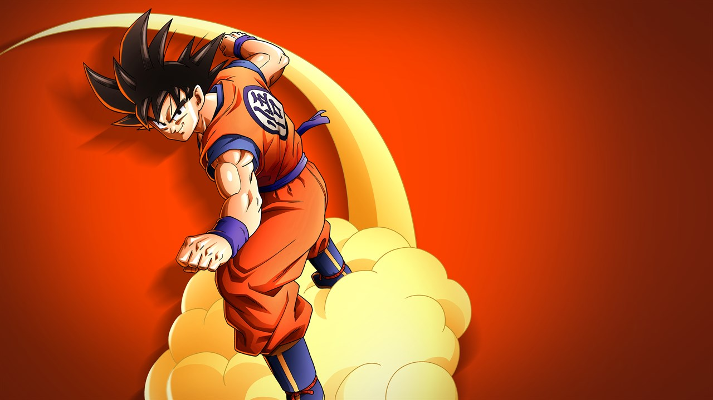
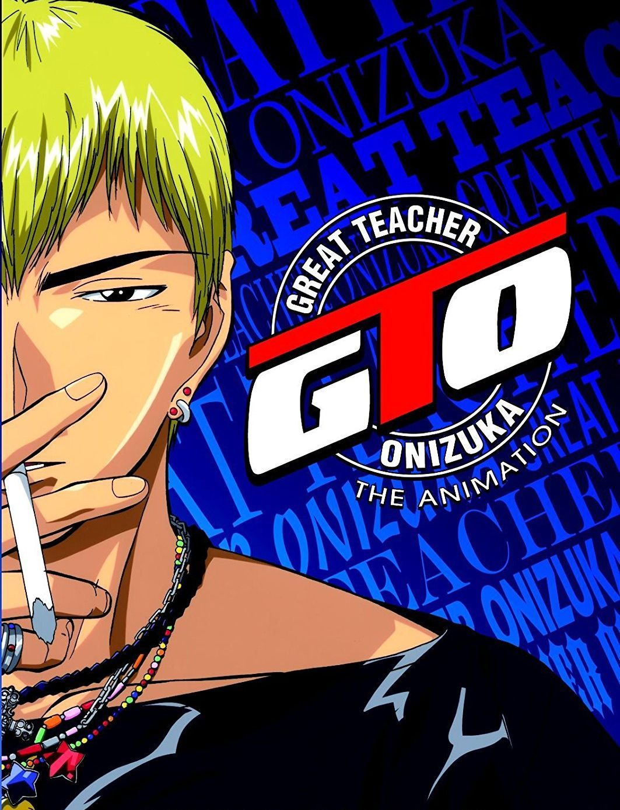

Mes Manga préférées
Naruto
L'origine de Naruto se déroule dans un monde rétro-futuriste où, bien que de nombreuses technologies modernes aient vu le jour, les ninjas et les samouraïs sont restés de véritables puissances militaires. Chaque pays a un village, qui représente la force militaire du pays, dirigé par un Kage (prononcé Kagué). Les villages, à travers leurs ninjas, se livrent des guerres les uns aux autres, à petite ou grande échelle, que ce soit pour obtenir des caractéristiques avantageuses propres aux villages ennemis, ou pour soumettre un autre village et gagner en puissance.
Dragon Ball
L'histoire de Dragon Ball suit la vie de Son Goku, un garçon à la queue de singe inspiré du conte traditionnel chinois La Pérégrination vers l'Ouest. Son Goku est un jeune garçon simple d'esprit et pur doté d'une queue de singe et d'une force extraordinaire. Il vit seul, après la mort de son grand-père adoptif, sur une montagne et en pleine nature, dans un paysage ayant les caractéristiques d'une forêt sauvage. Un jour, il rencontre Bulma, une jeune fille de la ville, très intelligente mais immature et impulsive. Elle est à la recherche des sept boules de cristal légendaires appelées Dragon Balls. Dispersées sur la Terre, ces Dragon Balls, une fois réunies, font apparaître Shenron, le Dragon sacré, qui exauce le souhait de la personne l'ayant invoqué. Son Goku accepte d'aider Bulma car son grand-père adoptif Son Gohan lui avait dit d'être gentil avec les filles ; de plus le vieil homme lui avait confié l'une des sept boules (celle à quatre étoiles), que le jeune garçon a perdue et souhaite retrouver en son souvenir. Au cours de leur parcours initiatique, ils font de nombreuses rencontres. Son Goku, qui n'était jamais sorti de sa forêt, est amené à suivre un apprentissage auprès de maîtres comme Maître Muten Roshi ou Maître Karin et à participer à plusieurs championnats du monde d'arts martiaux (Tenkaichi Budokai).
GTO
Eikichi Onizuka, 22 ans, « célibataire et libre comme l'air », est un jeune professeur au passé douteux qui est nommé pour son premier poste dans une classe difficile ; il montre rapidement une vision de l'enseignement totalement décalée avec les pratiques habituelles. Ses réactions anticonformistes et directes, souvent humoristiques, sont l'axe central de cette série. Il va évoluer avec cette classe, dont la spécialité est de faire craquer moralement leurs professeurs, en tentant de la rallier peu à peu à sa cause.